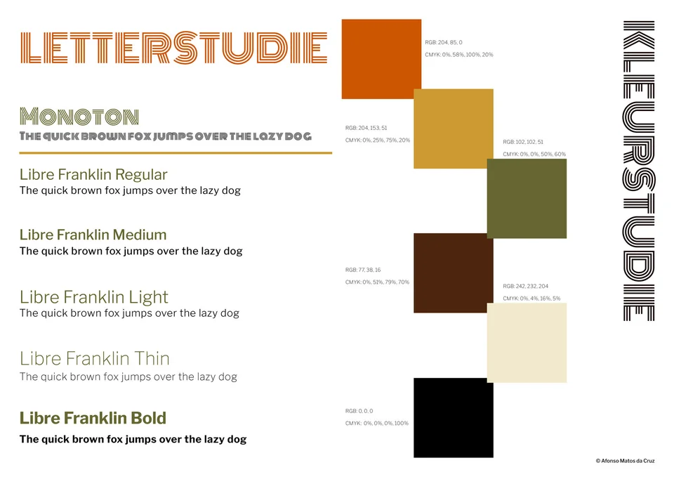
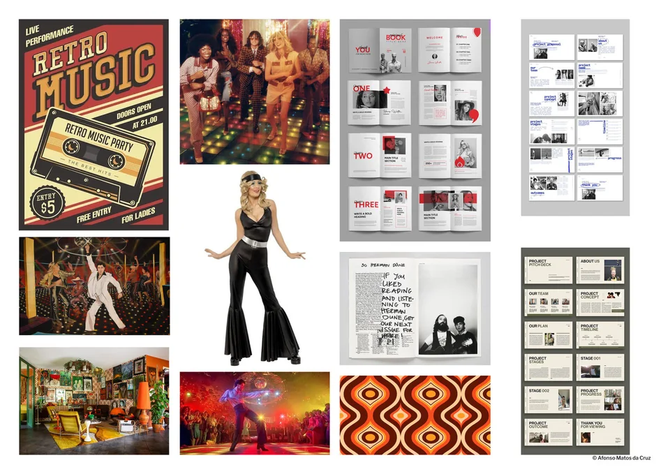
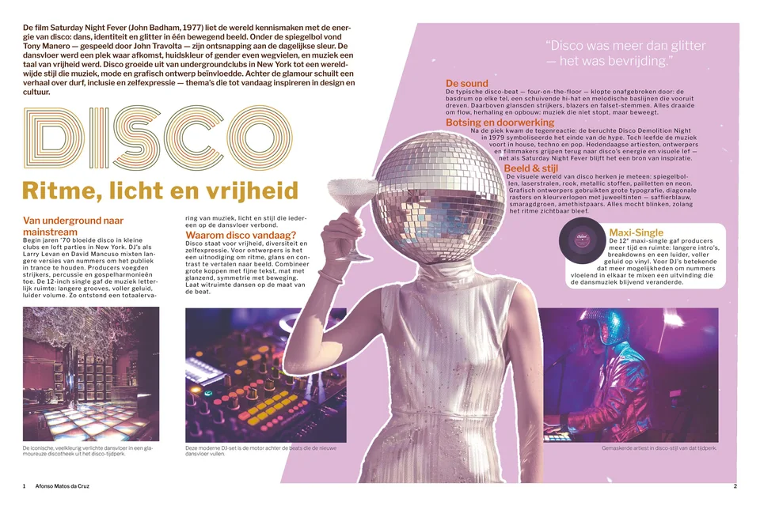

How do the rhythm, light and colours of the disco scene live on in modern design?
The starting point is the film Saturday Night Fever (1977). That energy carried on into the early 1980s in the Memphis movement (Milan, 1981), where designers like Ettore Sottsass turned the freedom of the dance floor into patterns and geometric shapes.
For the research I made moodboards with lettering and colour studies. From those came an editorial spread, a mood film and two websites that use the same visual language.




Websites for this project
These are school websites that open on their own. They load fonts from Google (see privacy).